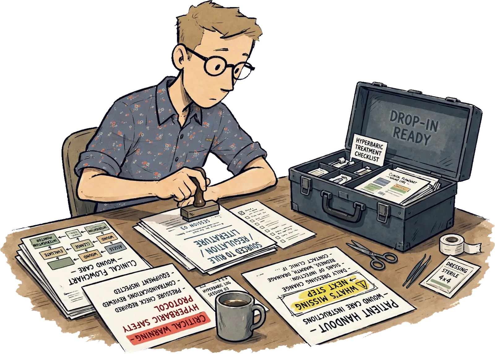

Matthew A. Davis, MBA
Operations · Corporate Development · Design & Communications · Independent R&D
Shared Health Services · 2025 — 2026
Tools
The tools on this page were built to solve problems I kept running into while supporting wound care and hyperbaric programs across the country. Every document drops into any partner site without editing, and every one is sourced to the rule, the regulation, or the clinical literature it rests on.
Rather than restating the requirements, most of these tools identify what is still missing from the record and what has to happen next to move a patient, a program, or a decision forward.
Every one is a working document, built for a real program and used in the field.

Screening Systems Seven indication-specific hyperbaric screening tools and the system around them: a flow diagram, a watch list, and the trackers that follow a patient from screening through reevaluation.
Operations & Safety The documents staff reach for on shift: the consult intake, the EMR documentation workflow, the patient-flow standard and the chamber grounding requirements.
Coverage & Documentation Tools that document to the strictest Medicare standard so a claim holds up in an audit, from skin substitutes and platelet-rich plasma to visit cadence and the stalled wound.
Patient & Clinician Education Material written for people outside the center: patients and their families, and the physicians who refer them.
Finance & Strategy The numbers behind a program decision: a pro forma, a year-over-year payment comparison, a chargemaster, the physician fee schedule and a side-by-side of two care models.
Workflow & IT Tools that keep a center running when systems, staffing or paperwork get in the way.